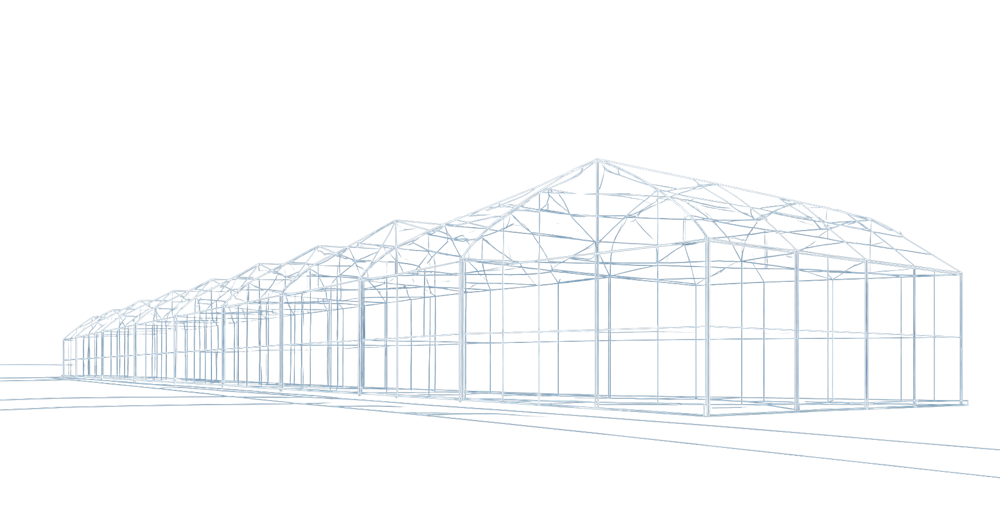
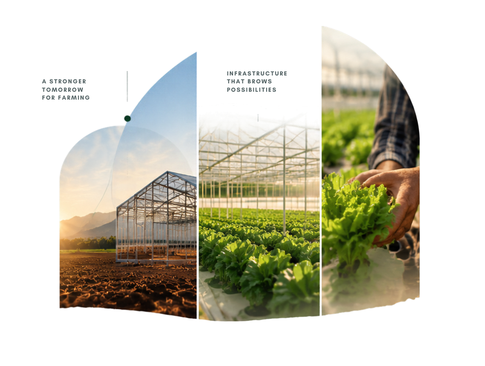
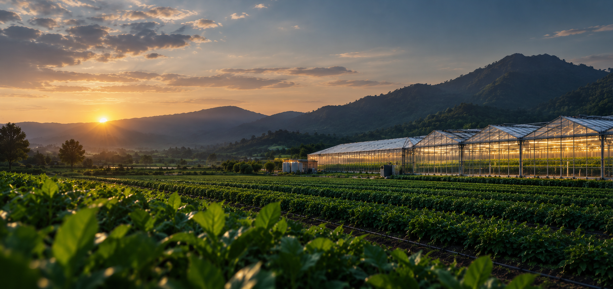

What is a
Fan Pad Polyhouse?
A Fan Pad Polyhouse is a type of protected cultivation structure equipped with exhaust fans and cooling pads to maintain optimal temperature, humidity and air circulation for crop growth. It creates a controlled environment that helps farmers grow high-quality crops throughout the year, regardless of external weather conditions.
- Better Climate Control
- Higher Yields
- Year-Round Production


The Growing
Environment
A fan pad polyhouse uses evaporative cooling to maintain a stable and ideal growing environment. Cooling pads at one end bring in fresh, cooled air while exhaust fans at the other end remove hot air, creating a continuous airflow that reduces temperature and maintains humidity.
Learn More About the Process
The Cooling &
Airflow Process
A continuous cycle that maintains the ideal environment for healthier crops and higher productivity.
-
01
Cooled Air Enters
Air passes through wet cooling pads, reducing temperature.
-
02
Air Circulates
Exhaust fans pull the cool air inside, ensuring uniform distribution.
-
03
Ideal Growing Conditions
Maintains optimal temperature and humidity for healthy crop growth.
-
04
Continuous Exchange
Hot air is expelled and fresh, cooled air continuously enters.
Key Components
Essential systems working together to create a stable, productive growing environment.
-

Smart Automation for Better Farming
From simple manual control to fully automated systems, we provide flexible solutions that help you save time, reduce effort and maximize productivity.
-
01
Manual Control
Basic control for small setups. Cost-effective and easy to operate.
-
02
Semi-Automatic
Timer and sensor based control for efficient operation.
-
03
Fully Automated
Integrated climate and fertilization control with real-time monitoring.
Climate & Site Fit
We assess your local climate and site conditions to design a protected farming solution that performs efficiently, all year round.
Right Solution for Your Location
Every farm is unique. We analyze your climate and site conditions to recommend the most suitable structure and growing system.
-
Temperature
Suitable for a wide range of hot and cold climates.
-
Sunlight
Optimized for higher light transmission.
-
Humidity
Maintain ideal humidity for better crop growth.
-
Wind Load
Engineered to withstand high wind conditions.
 Optimized for
Optimized forYour Environment
-
Rainfall
Efficient drainage and water management design.
-
Soil Type
Adaptable to different soil and site conditions.
-
Altitude
Suitable for plains as well as high-altitude regions.
-
Site Orientation
Designed for optimal sunlight and airflow.
Turning Control
into Value
Investment and operating-cost drivers; where added control can create value.
Explore Business Case-
01Setup Right
Initial
InvestmentStructure, fans, cooling pads, automation and installation.
-
02Operate Efficiently
Operating
CostsPower, water, maintenance and labour efficiency.
-
03Produce Better
Productivity
& QualityBetter climate control leads to higher yield, consistent quality and longer shelf life.
-
04Create More Value
Market
ValueAccess to premium markets and off-season opportunities.
Find the
Right Fit
Simple comparison with the nearest structure alternatives.
Explore Options-

Net House
Basic protection with moderate climate control.
Climate ControlLowInitial CostLowCrop SuitabilityVegetablesProductivityModerateDurability5-7 years -
Recommended
Fan Pad Polyhouse
Controlled environment for consistent and higher yields.
Climate ControlHighInitial CostModerateCrop SuitabilityWide rangeProductivityHighDurability10-15 years -

Shade House
Reduces heat and provides partial shade.
Climate ControlModerateInitial CostLow to ModerateCrop SuitabilityShade loving cropsProductivityModerateDurability7-10 years -
Open Field
Traditional farming without any protective structure.
Climate ControlNoneInitial CostVery LowCrop SuitabilitySeasonal cropsProductivityLow to ModerateDurabilityDepends on climate